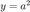
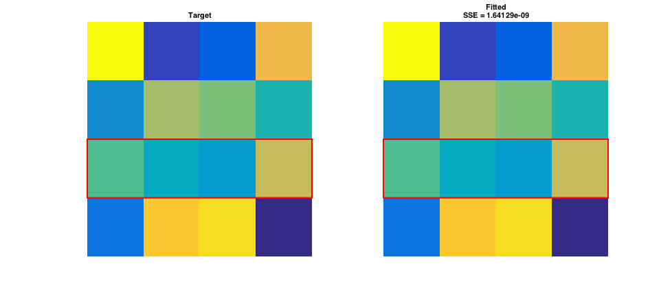

FitDemo.m
Contents
- Example 1: 2 Rosenbrock Function
- Visualize the Rosenbrock Function as a Surface in 2D
- Fitting the Rosenbrock
- Constrained Fitting the Rosenbrock
- Example 2: Fitting a Matrix
- Visualize the Matrices as 2D Image
- Fitting the Matrix
- Fitting a Specific Range within a Matrix
- Visualize the Matrices as 2D Image
- Fitting a Specific Range within a Matrix
- Constrained Fitting a Specific Range within a Matrix
Example 1: 2 Rosenbrock Function
A classic 2-parameter function used to test nonlinear optimization routines is the 'Rosenbrock' function. It has a shallow curved minimum that wreaks havoc on the simplest routines. It has the form:
Where and by default. The minimum is zero at , 
p.x = -1;
p.y = 2;
f = rosenbrock(p);
fprintf('Rosenbrock at initial parameters:\nf(%g,%g) = %g\n', p.x, p.y, f);
Rosenbrock at initial parameters: f(-1,2) = 104
Visualize the Rosenbrock Function as a Surface in 2D
[x,y] = meshgrid(linspace(-1.5,2,201),linspace(-.5,3,201)); psurf.x = x; psurf.y = y; f = rosenbrock(psurf); figure(1); clf; hold on; surf(psurf.x(1,:), psurf.y(:,1), f); shading interp view(-40,20); xlabel('x'); ylabel('y');

This builds a color map that roughly matches the image from the Wikipeida page:
tmp = hot(400); cmap = flipud(tmp(1:256,:)); cmap(1,:) = [0 0 1]; colormap(cmap);

Fitting the Rosenbrock
We will use 'fit.m' to find the minimum. The initial values for the Rosenbrock will be from before. First we'll define the parameters 'x' and 'y' in the structure that we want to be allowed to vary. These are listed in a cell array of strings called 'freeList':
freeList = {'x', 'y'};
[pBest,fBest] = fit('rosenbrock', p, freeList);
fprintf('The fitted minimum of the Rosenbrock:\nf(%g,%g) = %g\n', ...
pBest.x, pBest.y, fBest);
The fitted minimum of the Rosenbrock: f(0.999991,0.999983) = 1.70617e-10
Within rounding error, the minimum should be zero at (1,1). Here's the location of the minimum on the plot of the surface as a green marker:
plot3(pBest.x, pBest.y, fBest, 'ko', 'MarkerFaceColor', 'g');
Constrained Fitting the Rosenbrock
Using 'fitcon.m' to find the minimum with the same initial paramters, but the now parameter search space will be constrained by inequalities passed through in the 'freeList':
freeList = {'x > 2', '0 < y < 0.5'};
[pCon,fCon] = fitcon('rosenbrock', p, freeList);
fprintf('The constrained fitted minimum of the Rosenbrock:\nf(%g,%g) = %g\n', ...
pCon.x, pCon.y, fCon);
% Here's the location of the constained minimum on the plot of the surface
% as a yellow marker:
plot3(pCon.x, pCon.y, fCon, 'ko', 'MarkerFaceColor', 'y');
The constrained fitted minimum of the Rosenbrock: f(2,0.5) = 1226
Example 2: Fitting a Matrix
The 'fit.m' is also about the handle vectorized / matrix fitting.
For the sake of this example, let's pretend that you have a target matrix 'y', that you want to minimize the sum of squared error difference between another initial matrix 'x':
params.y = magic(4);
params.x = reshape(randperm(numel(params.y)), size(params.y));
SSE = @(p) sum((p.y(:) - p.x(:)).^2);
err = SSE(params);
fprintf('Current SSE between X and Y:\n%g\n', err);
Current SSE between X and Y: 544
Visualize the Matrices as 2D Image
f = figure(2); clf; f.Position = [230 558 978 420]; subplot(1,2,1); imagesc(params.y); axis off; title('Target'); subplot(1,2,2); imagesc(params.x); axis off; title(sprintf('Initial\nSSE = %g', err));
Fitting the Matrix
We will use 'fit.m' as before to find the minimum error (SSE) by allowing our initial matrix 'x' to be free to vary which keeping the target 'y' matrix constant.
freeList = {'x'};
[pBest,fBest] = fit(SSE, params, freeList);
Exiting: Maximum number of function evaluations has been exceeded
- increase MaxFunEvals option.
Current function value: 1.226931
Within fitting iterations, the fitted SSE should be closer to 0 SSE than the initial matrix. Visually this means that the fitted matrix should resemble the target matrix more than the initial matrix did.
f = figure(3); clf; f.Position = [230 558 978 420]; subplot(1,2,1); imagesc(pBest.y); axis off; title('Target'); subplot(1,2,2); imagesc(pBest.x); axis off; title(sprintf('Fitted\nSSE = %g', fBest));
Fitting a Specific Range within a Matrix
Let's say that only a specific range within the initial matrix 'x' should be fitted. 'fit.m' can also handle this through specification in 'freeList':
nRow = 3; % which row to mess with params.x = params.y; % resetting initial 'x' matrix, params.x(nRow,:) = 1:size(params.y,2);
Visualize the Matrices as 2D Image
The red boxes outline what should be the only row of difference between the two matrices.
f = figure(4); clf; f.Position = [230 558 978 420]; subplot(1,2,1); imagesc(params.y); rectangle('Position', [0.5 nRow-0.5 size(params.y,2) 1], ... 'EdgeColor', 'r', 'LineWidth', 2); axis off; title('Target'); subplot(1,2,2); imagesc(params.x); rectangle('Position', [0.5 nRow-0.5 size(params.x,2) 1], ... 'EdgeColor', 'r', 'LineWidth', 2); axis off; title(sprintf('Initial\nSSE = %g', SSE(params)));
Fitting a Specific Range within a Matrix
We will use 'fit.m' as before to find the minimum error (SSE) by allowing our initial matrix 'x'to be free to vary ONLY in the changed row while keeping the target 'y' matrix constant.
freeList = {sprintf('x(%d,:)', nRow)}; % {'x(3,:)'}
[pBest,fBest] = fit(SSE, params, freeList);
Within fitting iterations and rounding error, the fitted SSE should be 0. Visually, the only row that values have changed is the one we previously specified (highlighted in the red rectangle).
f = figure(5); clf; f.Position = [230 558 978 420]; subplot(1,2,1); imagesc(pBest.y); rectangle('Position', [0.5 nRow-0.5 size(pBest.y,2) 1], ... 'EdgeColor', 'r', 'LineWidth', 2); axis off; title('Target'); subplot(1,2,2); imagesc(pBest.x); rectangle('Position', [0.5 nRow-0.5 size(pBest.x,2) 1], ... 'EdgeColor', 'r', 'LineWidth', 2); axis off; title(sprintf('Fitted\nSSE = %g', fBest));
Constrained Fitting a Specific Range within a Matrix
'fitcon.m' is also able to specify a certain range within the matrix to fit as well as constrain the parameter search space with the inequalities passed through in the 'freeList':
freeList = {sprintf('0 < x(%d,:) < 8', nRow)}; % {'0 < x(3,:) < 8'}
[pCon,fCon] = fitcon(SSE, params, freeList);
f = figure(6); clf;
f.Position = [230 558 978 420];
subplot(1,2,1);
imagesc(pCon.y);
rectangle('Position', [0.5 nRow-0.5 size(pCon.y,2) 1], ...
'EdgeColor', 'r', 'LineWidth', 2);
axis off;
title('Target');
subplot(1,2,2);
imagesc(pCon.x);
rectangle('Position', [0.5 nRow-0.5 size(pCon.x,2) 1], ...
'EdgeColor', 'r', 'LineWidth', 2);
axis off;
title(sprintf('Constrained Fitted\nSSE = %g', fCon));